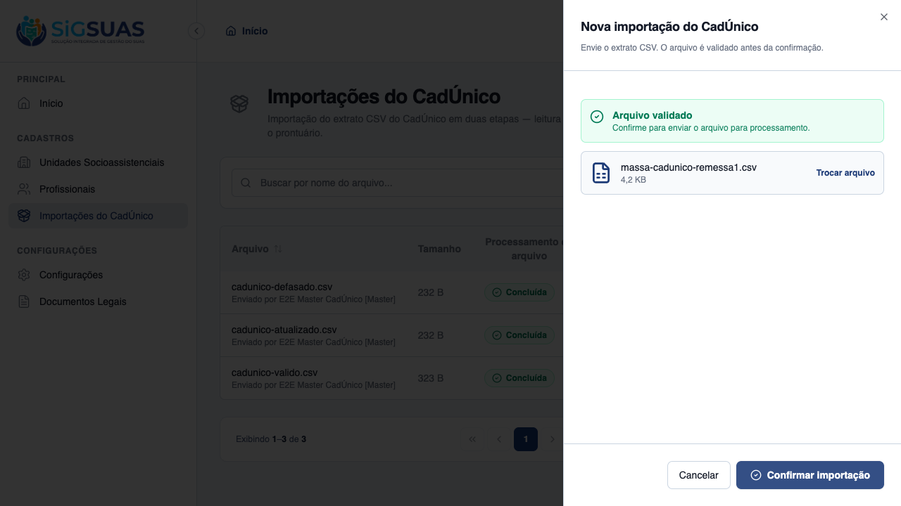
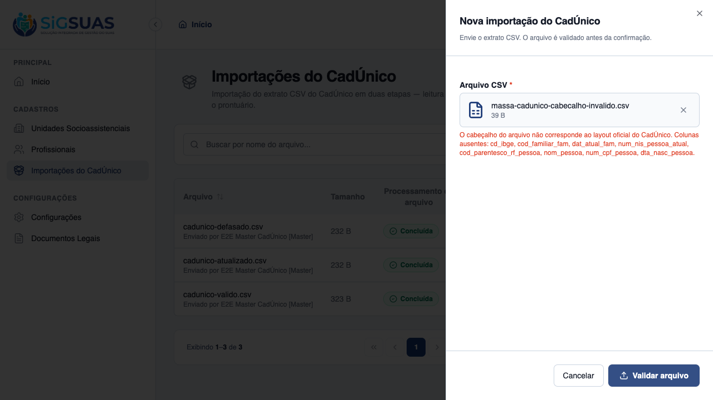
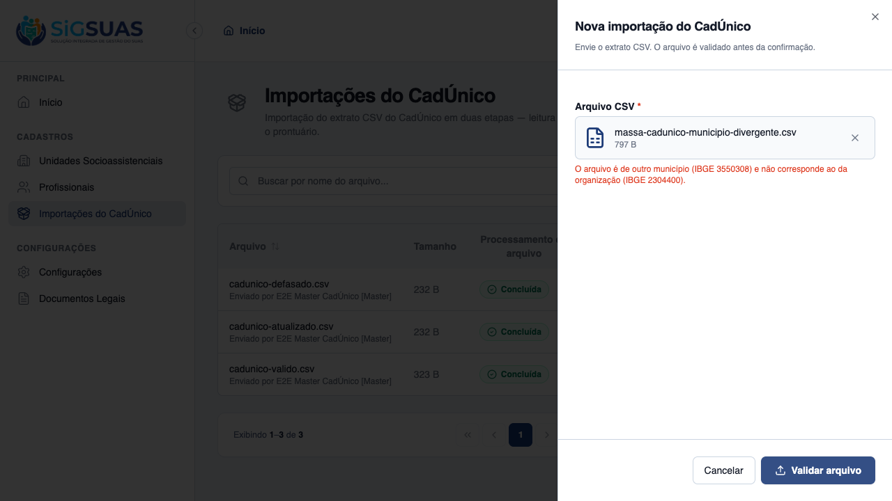
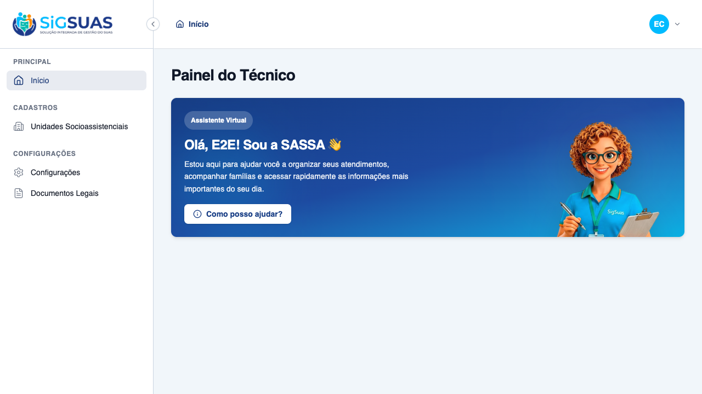
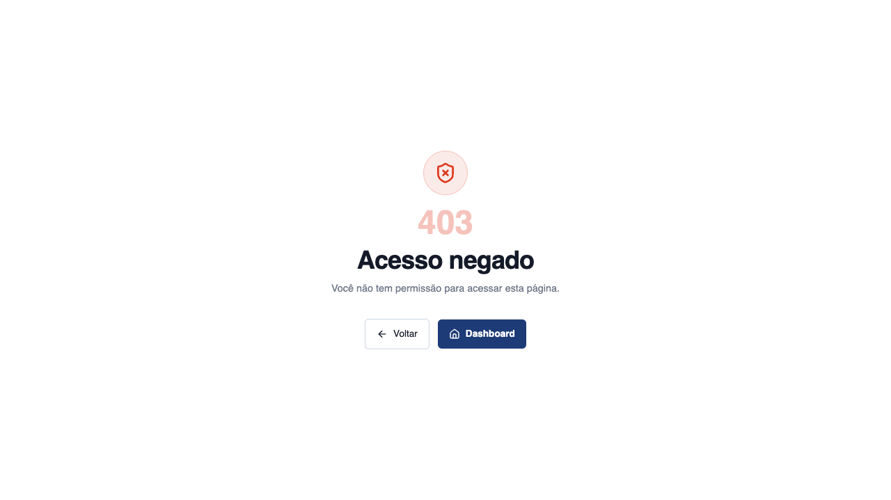

HU #9748 cobre o upload e a validação prévia do CSV do CadÚnico (CA01–CA03). Os 3 critérios foram evidenciados ao vivo no client (navegador): validação bem-sucedida com habilitação do 'Confirmar' (CA01), rejeição imediata de cabeçalho divergente e de arquivo de outro município (CA02), e bloqueio total do módulo para o Operacional sem permissão — ausência no menu e /403 no acesso direto (CA03). A suíte Pest (15 testes, 42 asserções, 100% verde) acompanha como apêndice, cobrindo também as regras de backend (RN01 município, RN11 concorrência, RN05 rótulo do executor, isolamento 404).
| CA | Critério | Status |
|---|---|---|
| CA01 | Sucesso na validação inicial | ATENDIDO · navegador |
| CA02 | Rejeição de formato / layout divergente | ATENDIDO · navegador + automatizado |
| CA03 | Bloqueio de interface por falta de permissão | ATENDIDO · navegador |
Critério (Gherkin): Dado que sou Operacional do Tenant com a permissão de importação Quando faço upload de um CSV válido no layout oficial do CadÚnico Então o sistema confirma a validação estrutural E habilita o botão para confirmar o processamento do lote
Como foi testado: Logado como Master, abrir Importações do CadÚnico → Nova importação → selecionar massa-cadunico-remessa1.csv (layout oficial, município 2304400) → Validar arquivo.

Critério (Gherkin): Dado que sou Operacional do Tenant com a permissão de importação Quando seleciono um arquivo que não é CSV ou com colunas divergentes Então o sistema rejeita o arquivo imediatamente E exibe mensagem clara com o motivo da rejeição
Como foi testado: Na mesma tela, validar (a) massa-cadunico-cabecalho-invalido.csv (colunas fora do layout) e (b) massa-cadunico-municipio-divergente.csv (IBGE de São Paulo, divergente do tenant). Backend reforça via Pest (mimes:csv, cabeçalho, município — RN01).


Critério (Gherkin): Dado que sou Operacional do Tenant SEM a permissão de importação Quando acesso o Painel do Tenant Então a funcionalidade de importação do CadÚnico não está visível/habilitada para mim
Como foi testado: Sair, logar como Operador (sem o papel que carrega cadunico-imports.*). Conferir o menu lateral e tentar o acesso direto a /app/cadunico-imports.


PASS Tests\Feature\Api\Client\CadunicoImportControllerTest ✓ it validates a well-formed CSV and returns an upload token (CA01) 0.57s ✓ it rejects a CSV from a different município (RN01) 0.03s ✓ it rejects validation when the tenant has no município configured 0.03s ✓ it rejects a CSV with a divergent header (CA02) 0.03s ✓ it blocks validation when an import is already active (RN11/CA07) 0.03s ✓ it confirms the import and queues stage 1 (HU02) 0.04s ✓ it records the executor label with [Master] suffix when not a profe… 0.03s ✓ it rejects store with an unknown upload token 0.03s ✓ it does not sync an import that is not completed 0.04s ✓ it queues stage 2 when the import is completed (Etapa 2 manual) 0.03s ✓ it blocks sync when another batch is active in the tenant (RN11) 0.03s ✓ it lists only the tenant own history (CA12) 0.04s ✓ it returns 404 for a cross-tenant import (CA12/RN10) 0.03s ✓ it hides the module from an operador without the permission (CA03) 0.03s ✓ it stores a generic failure message without leaking exception detai… 0.05s Tests: 15 passed (42 assertions) Duration: 1.46s